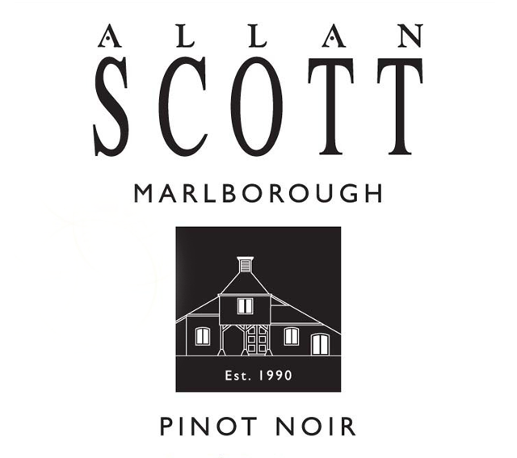

Pinot Nior
Made in Sonoma, Ca, this sauvignon blanc contains a small amount to Viognier and Semillion blend. With aroma of kefir lime , passion fruit, pink grapefruit, tart apple, honey fig and lemongrass, this wine is refreshing bright crisp.
Made in Sonoma, Ca, this sauvignon blanc contains a small amount to Viognier and Semillion blend. With aroma of kefir lime , passion fruit, pink grapefruit, tart apple, honey fig and lemongrass, this wine is refreshing bright crisp.